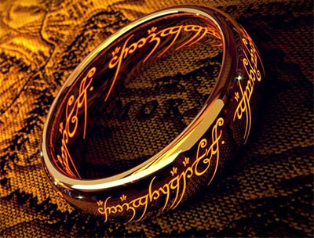
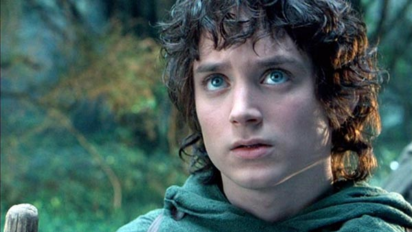
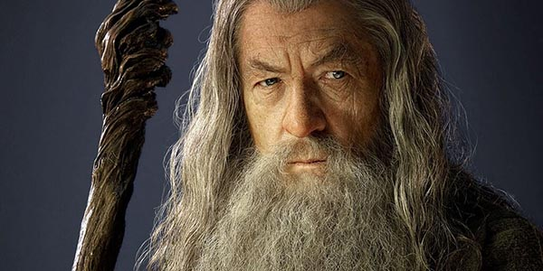
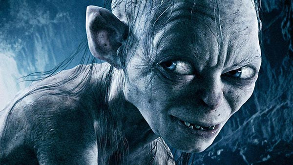
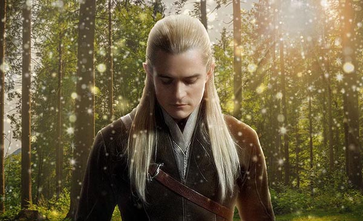

The Lore of the Rings
The One Ring
The One Ring, also known as the Ruling Ring, Master Ring, Ring of Power, and Isildur's Bane,
was among the most powerful artifacts ever created in Middle-earth. It was crafted by the Dark Lord Sauron.
Frodo Baggins
Frodo Baggins was a hobbit of the Shire in the late Third Age. He was a key figure in the
Quest of the Ring, in which he bore the One Ring to Mount Doom, where it was destroyed.
Gandalf
Gandalf, known largely as the Grey and later, briefly, the White, and originally named
Olórin (Quenya), was an Istar (Wizard), dispatched to Middle-earth in the
Third Age to combat the threat of Sauron.
Gollum
Gollum, originally named Sméagol (or Trahald), was a Stoor, one of the three early
Hobbit-types in the Third Age. By possessing the One Ring, his life extended centuries beyond
his nature, and he became deformed and twisted in body and mind by the corruption of the Ring.
Legolas
Legolas was a Sindar Elf who joined the Fellowship of the Ring in the Third Age.
Son of the Elvenking Thranduil of Mirkwood, Legolas was Mirkwood's prince, a messenger,
and a master archer.